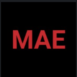
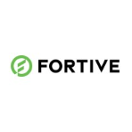
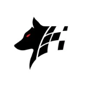

JS
JS
Jatin Sikka
AI & Robotics |
Austin, TX
Ex-Tesla
Ex-Fortive
UT Austin
About
about_me.txt
Hey, I'm Jatin. Currently a PhD student at UT Austin working on humanoid loco-manipulation at the Human Centered Robotics Lab. On leave in India till Fall 2026 to ship ~20 ventures in parallel. Farming AI, legal AI, a Hindi voice stack, factory QC vision, plus a few more that deserve their own footnotes.

Before UT: BS Mech E with a CS minor at NC State, GPA 3.81. Two research labs. Intelligent Controls (TRPO RL, optimal control for vehicle navigation) and Ultrasonics Characterization (lung phantoms, hydrogels).
Two Tesla stints. Summer 2023: Software Data Engineer on the Body-in-White team, Model Y and CyberTruck, Austin. I wrote the dashboards that watched the first CyberTruck come off the line. Spring 2022: Plastics and Paint, Model S/3/X, Fremont. CATIA, SOLIDWORKS, and a lot of plastic.

Fall 2021: Fortive rotational internship at Hengstler Dynapar. Half Gurnee IL, half Elizabethtown NC. Program management, mech design, 3D printing. The fastest way I've learned a business top to bottom.

Before the internships: NC State Design Shop assistant (laser cutting, AutoCAD, teaching freshmen where the E-stop is) and two years on Pack Motorsports FSAE, aero team (CFD, FEA, composites). I built race cars before I built products.
JS
The actual point: I ship fast, prefer the hard stack (robotics, voice, vision) over crypto-flavored SaaS, and parallelize across ~20 ventures because focus is overrated when you can distribute. Say hi: jatin@jsikka.dev.
Explore
Where the work lives.